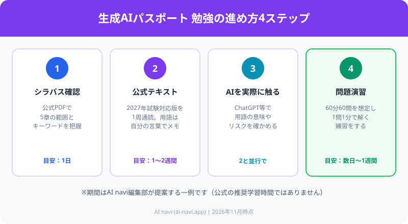

生成AIパスポートとは？試験の概要
生成AIパスポートは、一般社団法人生成AI活用普及協会（GUGA）が実施する、生成AIを安全に使うためのリテラシーを問う資格試験です。プログラミングの知識は問われず、生成AIの仕組みや使い方に加えて、著作権・個人情報・誤情報といったリスクへの対処が出題の中心になります。公式サイトでは累計受験者数が14万名を超えたと案内されています。
| 項目 | 内容（2026年11月時点） |
|---|---|
| 主催 | 一般社団法人生成AI活用普及協会（GUGA） |
| 受験方式 | オンライン（IBT方式）。受験期間中ならいつでも受験可 |
| 試験時間・問題数 | 60分・60問 |
| 出題形式 | 四肢択一式（適切・不適切なものを選ぶ） |
| 受験料（税込） | 一般11,000円／学生5,500円 |
| 受験資格 | なし（試験は日本語のみ） |
| 合格基準 | 非公開 |
| 資格の有効期限 | 無期限 |
合格すると、合格証書と生成AIパスポートのロゴを会員マイページからダウンロードできます（郵送はなし）。名刺や履歴書に記載するときは、合格通知メールなどに示された年月を書くよう案内されています。
試験日程と申込期間｜次は2027年2月試験
試験は年5回、偶数月に1か月間の受験期間が設けられています。受験期間中であれば、自分の都合のいい日時に受験できます。
| 試験回 | 申込期間 | 受験期間 |
|---|---|---|
| 2月試験 | 10月1日〜1月31日 | 2月1日〜2月末日 |
| 4月試験 | 2月1日〜3月31日 | 4月1日〜4月30日 |
| 6月試験 | 4月1日〜5月31日 | 6月1日〜6月30日 |
| 8月試験 | 6月1日〜7月31日 | 8月1日〜8月31日 |
| 10月試験 | 8月1日〜9月30日 | 10月1日〜10月31日 |
2026年11月時点では、2027年2月試験の申込を受け付けています。申込締切は2027年1月31日、受験期間は2027年2月1日〜2月28日です。合否は試験実施月の翌月中旬（20日頃まで）に、登録メールアドレスとマイページで通知される予定です。日程は変更される場合があるため、申し込む前にGUGA公式サイトで最新情報を確認してください。
受験期間の最終日は24時で試験が強制終了します。月末ぎりぎりに受けると、通信トラブルが起きたときに取り返せません。期間の前半に受ける計画にしておくと安心です。
2027年2月試験からのシラバス改訂ポイント
GUGAは2026年10月1日に、2027年2月試験から適用する新シラバスを公表しました。新シラバスは次の5章で構成されています。
- AIの基礎と歴史
- 生成AI
- AIエージェント
- 生成AIのリスク予防・AI倫理・ガバナンス
- 生成AIの実践と活用事例
主な変更点
- AIエージェントを拡充：章立てを再編し、RAGやMCPの内容を更新。コンテキストエンジニアリングやプロンプトインジェクションが追加
- リスク予防・ガバナンスを強化：旧「情報リテラシー・基本理念とAI社会原則」の章を置き換え、利用者の判断・責任、シャドーAI、安全保障の項目を追加
- 業務別の活用法を追加：マーケティング、クリエイティブ制作、データ分析、アプリ開発などの活用法や業種別事例、AI出力の評価・検証の観点
2026年までの教材だけで勉強すると、AIエージェントやガバナンスの新しい範囲が抜け落ちます。中古のテキストや以前の受験者のノートを使う場合は特に注意してください。
難易度と合格率
GUGAの公式サイトによると、2026年8月試験の合格率は81.2%です。合格基準点は公開されていませんが、受験者の8割程度が合格している水準なので、IT系資格の中では入門レベルといえます。
とはいえ、試験は60分で60問、1問あたり1分のペースで解く必要があります。「適切なものを選ぶ」問題と「不適切なものを選ぶ」問題が混ざるため、設問を読み飛ばすと知っている内容でも落とします。用語をなんとなく知っているだけでは迷う選択肢も出るので、テキストで正確な定義を押さえておくことが合格への近道です。
なお、より技術寄りの資格としてJDLAのG検定がありますが、こちらはディープラーニングの仕組みまで幅広く問われます。まず生成AIの使い方とリスクを一通り押さえたい人には、生成AIパスポートのほうが取り組みやすいでしょう。
生成AIパスポートの勉強方法4ステップ
独学で合格を目指す場合の進め方を4ステップにまとめました。期間はAI navi編集部が提案する一例で、公式の推奨学習時間ではありません。

ステップ1：シラバスで出題範囲をつかむ（1日）
GUGAの公式サイトでシラバス（PDF）が公開されています。5章それぞれの学習目標と詳細キーワードが一覧になっているので、最初に目を通して「知っている用語」と「初めて見る用語」に印をつけておきましょう。後のテキスト学習で、どこに時間を割くべきかがはっきりします。
ステップ2：公式テキストを1周通読する（1〜2週間）
2027年2月試験を受けるなら、新シラバスに対応した公式テキストを使ってください。最初の1周は細部を覚えようとせず、全体の流れをつかむことを優先します。読みながら、重要な用語は「自分の言葉で一文説明」をメモにしておくと、試験直前の見直しに使えます。
ステップ3：生成AIを実際に触って確かめる（ステップ2と並行）
テキストに出てくる「ハルシネーション」「プロンプトインジェクション」などは、実際にChatGPTやClaudeを触ると理解が早まります。たとえば同じ質問を言い回しを変えて投げ、回答がどう変わるかを確かめるだけでも、プロンプトの考え方が身につきます。無料版の範囲で十分なので、使い方に不安がある人は「ChatGPT無料版の使い方」を参考に始めてみてください。
リスク分野は、生成AIの弱点を知っておくと選択肢を絞りやすくなります。「AIツールのデメリットと注意点」も試験範囲の具体例として役立ちます。
ステップ4：問題演習で時間配分に慣れる（数日〜1週間）
最後は問題集や模擬問題で、60分60問のペースに慣れておきます。間違えた問題は「知識不足」か「設問の読み違い（適切／不適切）」かを分けて記録すると、本番で同じミスを防げます。新シラバスの範囲に対応しているかどうかは、購入前に教材の説明で確認しましょう。
公式テキストと教材の選び方
2027年試験向けの公式テキストは、発行元が翔泳社に変わりました。正式名称は「AXリテラシー教科書 生成AIパスポート 公式テキスト 2027年試験シラバス対応」で、2026年10月1日に予約販売が始まり、予約分は11月24日から順次発送と案内されています。執筆とシラバスの決定は引き続きGUGAが担当しています。
書店や通販で探すときは、タイトルに「2027年試験シラバス対応」と入っているかを必ず確認してください。旧版は新しく追加された範囲に対応していません。
生成AIパスポート対策の教材を探す
購入前に「2027年試験シラバス対応」の表記を確認してください。
※もしもアフィリエイト経由のAmazonリンクを含みます
資格の勉強と合わせて生成AIの知識を広げたい人は、「生成AI・ChatGPTおすすめ本10選」で入門書から実践書まで紹介しています。合格後に実務スキルをさらに伸ばしたい場合は、生成AIスクールおすすめ4選の比較も参考にしてください。
受験当日の注意点
- 通信環境：Wi-Fiか有線LANで、5Mbps以上の安定した回線が必要です
- 端末：パソコン・スマートフォン・タブレットで受験できます。パソコンの場合はWindows 10/11またはmacOS 11以上、最新版のChrome・Edge・Firefox・Safariが推奨されています
- 一時停止はできない：開始したら60分で自動終了します。トイレや来客の予定がない時間帯を選びましょう
- 最終日の24時で終了：期間最終日は24時00分を過ぎると試験が中断されます
- 問い合わせ：受験期間中のサポート対応は平日10時〜18時です。土日や夜に受ける場合、トラブルの解決が翌営業日になる可能性があります
よくある質問（FAQ）
まとめ
2027年2月試験を狙うなら、12月中に新シラバス対応テキストを手に入れて、1月に問題演習という流れが組みやすいです。申込締切の1月31日だけはカレンダーに入れておきましょう。
生成AIパスポート まとめ
- 試験：GUGA主催、オンライン・60分60問・四肢択一式
- 受験料：一般11,000円／学生5,500円（税込）
- 合格率：81.2%（2026年8月試験）。合格基準は非公開
- 次の試験：2027年2月1日〜28日（申込は1月31日まで）
- 教材：「2027年試験シラバス対応」の公式テキストを選ぶ
参考：
※試験情報は2026年11月時点のGUGA公式サイトの掲載内容です。